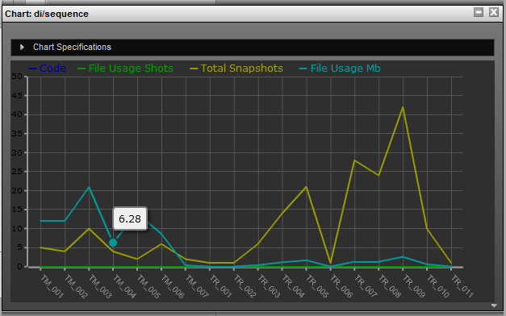
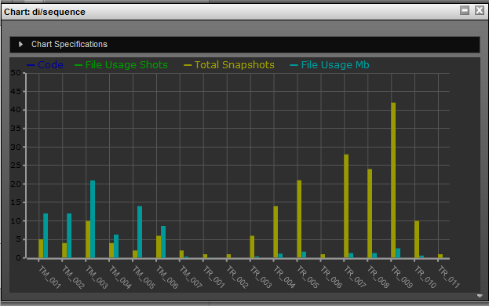
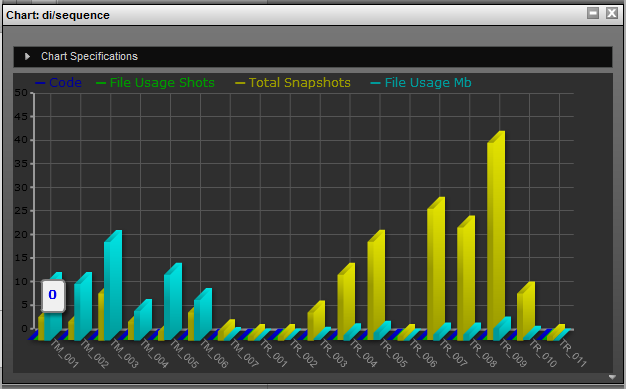
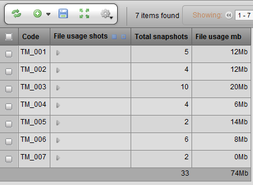
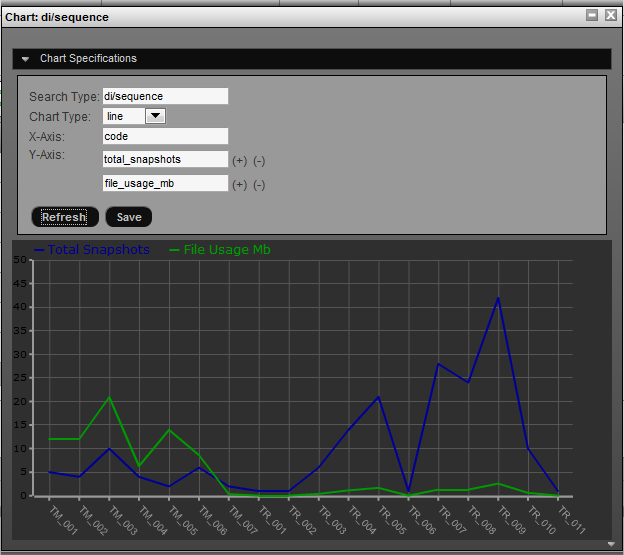

Tactic includes supprt for charting views in your project in different charting formats. These charts supply visual representations of your data for use in reporting, statistics and data comparisions.
The various types of charts available are:
Line

Bar

Bar3D

Some notes about charting
When creating a view to be charted, it is important that the view includes columsn which provide numerical based data. This data is required to allow the chart to draw correctly.
You are able to have multiple data values on the data axis of the chart. For example if you have a view of assets and want to iclude statistics on the total snapshots, total notes and total tasks the chart will be able to include all three.
Generating Charts
-
First create a view you wish to chart, in this case we will be using a 'file usage' view. This view shows the Mb usage and snapshot count for all of the assets in the project.

-
In the table gear menu, there are 2 options:
-
Chart items - charts all items in the system for the particular Search Type (in this example assets)
-
Chart selected - charts all selected items in the view.

-
-
In the gui, a chart will be generated with the assumed y-axis column being 'code' and the x-axis being all other columns in the view. The setting for the cart can be further tweaked in the Chart specifications.


Chart Specifications
|
search_type |
The Search Type the chart is being generated for. |
|
chart_type |
The type of chart to generate. See the chart types below. |
|
Y Axis |
The column to use for the y-axis |
|
X Axis |
The column(s) to use for the x-axis |
Saving Charts
Currently Charts cannot be saved. This will be included in a future release of Tactic.
Advanced
Axis Expressions
The charting Gui supports using expression directly for the x-axis. To do so:
-
In the chart specifications, hit the (+) to add a new x-axis value.
-
In the text field provide an expression. For example {@COUNT(sthpw/note)}
-
Refresh the chart and the expression will be evaluated as a column.